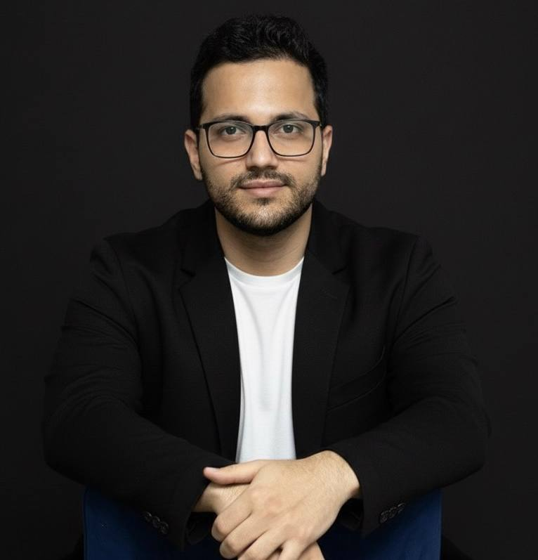

About
I'm an applied AI scientist and engineer building production-ready computer vision and machine learning systems for robotics, automation, and scientific imaging. I enjoy turning messy, real-world data into robust, testable, and deployable AI solutions.
Most of my work sits at the intersection of computer vision, robotics, and large-scale data processing. I have built AI components for automated microscopes, robotic specimen handling systems, predictive maintenance in the energy sector, and satellite-based environmental monitoring.
While I am currently a PhD researcher at Karlsruhe Institute of Technology (KIT), my mindset is product-driven: define the problem with stakeholders, design an end-to-end pipeline, measure impact, and ship.
I like working close to the product: partnering with engineers, domain experts, and business stakeholders to translate cutting-edge research into tools that are maintainable, user-friendly, and ready for production.